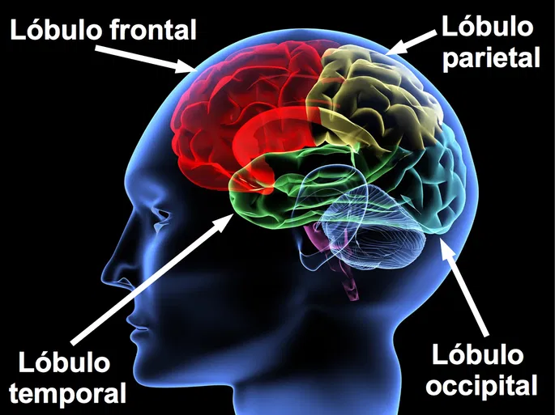
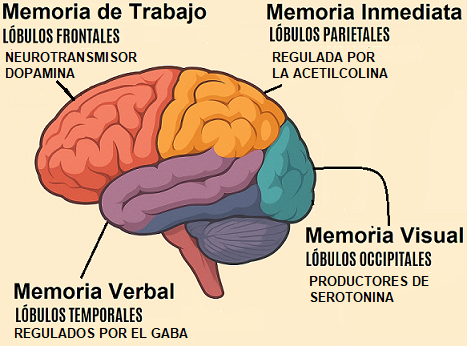

A medida que envejecemos, muchos tememos perder la memoria. La amenaza del Alzheimer es particularmente aterradora: solo en 1997, 2,3 millones de personas, algunas de tan solo sesenta años, fueron diagnosticadas con esta enfermedad. La mayoría se preocupa por olvidar nombres, números de teléfono y dónde dejaron las cosas. La buena noticia es que la mayoría de las quejas sobre la memoria no se deben a problemas de memoria en sí, sino a una pérdida bioquímica que también se manifiesta como ansiedad, depresión, enfermedad o trastornos emocionales.
Por ejemplo, el síndrome de la punta de la lengua, en el que se olvidan cosas pero se tiene la sensación de estar a punto de recordarlas, es en realidad un síntoma de ansiedad. Además, el Alzheimer, la ansiedad y la pérdida de memoria no son consecuencias inevitables del envejecimiento. Son, más bien, indicios concretos de deficiencias químicas cerebrales, y todas son reversibles.
Cuando se detectan déficits leves a tiempo, se pueden usar remedios naturales para retrasar los estragos de la senilidad. Si experimenta problemas de memoria, no los ignore. Con la edad, perdemos muchas conexiones nerviosas del cerebro, pero no perdemos células cerebrales. Algunos estudios incluso sugieren que podemos generar nuevas células cerebrales y reconectar las que se han desconectado.
Existen dos verdades universales con respecto a nuestra capacidad de recordar: la memoria no siempre es precisa y los recuerdos no duran para siempre.
La memoria se ve afectada por la percepción, los sentimientos y la experiencia. Con la edad, recordamos los sucesos de manera diferente. Los recuerdos de eventos traumáticos de la infancia suelen estar distorsionados debido a su contenido emocional, y es fácil que surjan falsos recuerdos; la veracidad de un recuerdo es extremadamente difícil de establecer sin confirmación independiente. Si se les pide a las personas que recuerden eventos de su infancia a los cincuenta y cinco años y luego a los setenta, sus respuestas varían enormemente.
El efecto completo de la percepción depende considerablemente de cómo se experimenta un evento y cómo se filtra a través de los recuerdos, las emociones y las fantasías, ya que la percepción está influenciada por las experiencias pasadas, los recuerdos asociados y las influencias sociales simultáneas.
Todos nacemos con diversas capacidades perceptivas y de memoria. Existen cuatro tipos distintos de memoria que pueden reflejar un desequilibrio bioquímico específico:


La memoria de trabajo implica la capacidad de concentrarse rápidamente y procesar información o estímulos presentados verbal o visualmente. Cuando se presenta un estímulo al cerebro, la memoria de trabajo lo registra rápidamente o no. La memoria de trabajo consiste en integrar datos antiguos y recientes.
Si el cerebro se ve sobrecargado de información reciente, descartará los recuerdos más antiguos para dejar espacio a los nuevos. La memoria a largo plazo está correlacionada con la memoria de trabajo: si se puede absorber información inicialmente, también se podrá almacenar.
Las funciones de la memoria de trabajo incluyen el control motor, la concentración, la resolución de problemas, la planificación, la retención de conocimientos y el registro inicial, todas ellas reguladas por los LÓBULOS FRONTALES Y EL NEUROTRANSMISOR DOPAMINA.
La memoria inmediata es un efecto a corto plazo —que dura aproximadamente treinta segundos— que se produce al presentarse un estímulo, pero antes de que se registre en la memoria a largo plazo. Es difícil distinguir dónde termina la memoria de trabajo y dónde comienza la memoria inmediata.
La memoria inmediata comprende tanto la memoria verbal como la visual. Es útil para dominar actividades cotidianas sencillas e indica la capacidad de aprendizaje y el estado de alerta básico de una persona.
Los recuerdos inmediatos se ALMACENAN BREVEMENTE EN LOS LÓBULOS PARIETALES, CUYA ACTIVIDAD ESTÁ REGULADA POR LA ACETILCOLINA.
La memoria verbal es necesaria para almacenar sonidos, palabras e historias. Por ejemplo, escuchar una conferencia y luego recordar con exactitud lo que se dijo demuestra una buena memoria verbal.
Este tipo de memoria es fundamental para el aprendizaje académico, la comunicación efectiva y la socialización. Las personas con una memoria verbal bien desarrollada suelen tener facilidad para aprender idiomas, recordar nombres y seguir instrucciones complejas.
LOS LÓBULOS TEMPORALES, REGULADOS POR EL GABA, almacenan recuerdos de información escrita o presentada verbalmente.
La memoria visual implica la capacidad de absorber y retener información como rostros, colores, formas, diseños, símbolos y el entorno. Las personas que pueden conducir hasta un lugar después de haber estado allí solo una vez demuestran una excelente memoria visual.
Esta capacidad es esencial para tareas como la navegación, el reconocimiento de personas y lugares, y la interpretación de información gráfica. Los artistas, arquitectos y diseñadores suelen tener una memoria visual muy desarrollada.
LOS LÓBULOS OCCIPITALES, PRODUCTORES DE SEROTONINA, controlan el entrenamiento visual y sensorial y se conectan con la memoria inmediata de los lóbulos parietales.
Existen múltiples cambios fisiológicos en el cerebro asociados con la pérdida de memoria y el deterioro mental. Independientemente de la edad, el deterioro de la memoria es una señal de que se está experimentando el efecto borde.
La acetilcolina es la sustancia bioquímica más directamente implicada en la pérdida de memoria. Promueve dos funciones importantes: la velocidad cerebral y la hidratación cerebral.
Cuando nuestra velocidad cerebral disminuye, no podemos pensar con la misma rapidez y perdemos la capacidad de recordar eventos, direcciones o nombres almacenados en nuestra memoria de trabajo.
Una deficiencia de dopamina y la consiguiente pérdida de energía en el cerebro pueden manifestarse como un debilitamiento de la memoria de trabajo.
Las deficiencias de GABA suelen manifestarse mediante dolor crónico. El dolor intenso causa pérdida de memoria, ya que la falta de analgésicos reduce los niveles de GABA.
Las deficiencias de serotonina provocan un descanso insuficiente del cerebro. La falta de sueño también contribuye a la depresión o los traumas, que también pueden afectar la memoria.
La enfermedad de Alzheimer es una de las perspectivas más aterradoras de la vejez. El término Alzheimer describe un conjunto de demencias y síntomas que comienzan con un deterioro cognitivo o de la memoria.
El Alzheimer tiene varias etapas, que comienzan en los lóbulos temporales con cambios sutiles y breves en la memoria verbal y, posteriormente, visual. En los casos más graves, nunca progresa más allá de la pérdida de memoria. En los más graves, conduce al colapso total de todos los sistemas físicos.
Todos los pacientes con Alzheimer experimentan un deterioro de sus vainas de mielina, lo que causa placas, o grupos de material neuronal dañado, a lo largo de la vía de la acetilcolina en el cerebro.
Las causas más comunes de demencia son la hipertensión, el consumo de tabaco, el infarto de miocardio, la diabetes y el colesterol alto.El Alzheimer es la pérdida total del efecto borde. Todas las enfermedades del cerebro y del cuerpo, incluido el proceso de envejecimiento, contribuyen en última instancia al desarrollo de la demencia.
El abordaje de los problemas de memoria requiere un enfoque integral.
Los casos más graves de pérdida de memoria requieren los remedios más potentes: fármacos como el donepezilo (Aricept), la rivastigmina (Exelon), la memantina (Namenda) y la tacrina (Cognex).
Las hormonas asociadas con la función de la memoria incluyen la hormona del crecimiento humano, la vasopresina, la DHEA y la pregnenolona, así como el estrógeno y la testosterona.
Las sustancias bioquímicas responsables de la actividad cerebral provienen de los alimentos que consumimos y los suplementos que tomamos. La función de la memoria comienza en los lóbulos parietales, donde el neurotransmisor acetilcolina controla la velocidad cerebral.
Aumentar los niveles de acetilcolina de forma natural cuando sienta que su memoria empieza a debilitarse es su prioridad principal.
La música relaja el cerebro, lo que permite escuchar mejor. Usar música para relajarse aumenta el GABA y sincroniza los hemisferios izquierdo y derecho.
Para mejorar la memoria general, el dispositivo CES (Estimulación Craneal Eléctrica) se convierte en una herramienta importante, ya que potencia todos los neurotransmisores.
Tirosina: utilizada por el cerebro para producir dopamina
Fenilalanina: mejora el aprendizaje y la memoria
L-dopa: precursor de la dopamina
Tiamina: vitamina B que aumenta la dopamina
Alimentos: Huevos; Pescados salmón, atún; Carnes ternera, cerdo y pollo; Vegetales espinacas , Pimiento rojo; Lacteos leche, quesos curados, yogur; Semillas almendras, nueces, girasol y calabaza; Frutas plátanos, Aguacate ; otros que liberar son chocolate negro, Cereales integrales avena y las legumbres frijoles negros, habas, lentejas.
Colina: precursor de la acetilcolina
Acetilcarnitina: aumenta los niveles de acetilcolina
Fosfatidilserina: conservante natural de la acetilcolina
Huperzina-A: preserva la colina
Alimentos: Huevos; Pescados Bacalao, salmón y sardinas; Carnes Hígado de res o ternera, Pollo y pavo; Vegetales Crucíferos como brócoli, coliflor y coles de Bruselas; semillas Almendras y nueces ; legumbres Garbanzos y lentejas; Cereales integrales, germen de trigo y avena; frutas Manzanas y frutos rojos
Inositol: vitamina B que ayuda a aumentar GABA
Taurina: ayuda con la producción de GABA
Vitaminas del grupo B
Kava: hierba relajante
Alimentos: Huevos; Pescados: Bacalao, salmón; Carnes Hígado de res, hígado de pollo, carne de res, pollo y cerdo; Vegetales Brócoli, coliflor, coles de Bruselas y patatas; lacteos Leche, queso y yogur; legumbres Frijoles, maní ;Semillas almendras, linaza y girasol; Fruta muy bajas en GABA kiwi, platanos
Triptófano: precursor de la serotonina
Vitamina B6
Melatonina: regula el ciclo del sueño
Hierba de San Juan
Alimentos: Huevos; Pescados Salmón, sardinas y atún; Carnes pavo y el pollo; Vegetales espinacas,remolacha, zanahoria , brocoli; Frutas piña y platano; lacteos Leche, queso y yogur; legumbres lentejas y las alubias; Semillas nueces, almendras, pistachos, calabaza y girasol;
Muchos de los elementos del Test de Memoria de Braverman son comparables a la Escala de Memoria de Wechsler (WMS) y al Test de Memoria de Randt, estándares reconocidos para evaluar la memoria a corto plazo y la atención. Este test consta de seis partes. Por favor, reserve tiempo para completarlo en una sola sesión. Puede tomarse el tiempo que necesite. Para muchas de las secciones, le será útil contar con la ayuda de otra persona.
Asegúrese de estar bien descansado antes de realizar este test de memoria. Siga todas las instrucciones cuidadosamente y anote sus respuestas. Si cree que ya está experimentando las primeras etapas de la pérdida de memoria, le recomendamos fotocopiar las páginas del test para poder repetirlo más adelante, después de haber seguido mi programa de recuperación.
Tras completar todas las pruebas, podrás comprobar si tus respuestas fueron correctas. Al final de las pruebas, sumarás tus puntos para determinar tu puntuación. Lo ideal es dedicar una hora a cada prueba o completarla antes de descansar.
Si no aprovechas las capacidades cognitivas de tu cerebro, estas se debilitarán y las perderás. Recientemente se ha descubierto que el cerebro adulto puede generar nuevas células hasta bien entrada la vejez.
Ejercicio físico: Promueve la salud general y garantiza un flujo sanguíneo adecuado al cerebro.
Memorización activa: Intenta memorizar nombres, direcciones y números de teléfono.
Juegos mentales: Crucigramas, juegos de ingenio y trivial.
Lectura activa: Lee el periódico y escribe las respuestas a las preguntas de quién, qué, cuándo, dónde, por qué y cómo.
Dibujo de memoria: Intenta dibujar algo que hayas visto recientemente.
Idealmente, deberías ejercitar el cerebro hasta cincuenta horas al mes, lo que se traduce aproximadamente en doce horas a la semana, o menos de dos horas al día.